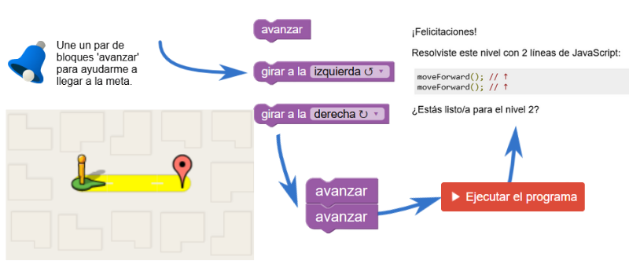
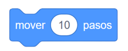
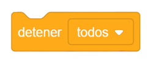
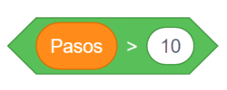

Lección 3
Programación por bloques con Blockly
Blockly es un entorno de programación visual que permite construir algoritmos mediante bloques encajables. Mediante una serie de juegos educativos que enseñan programación informática. En esta lección trabajaremos dos ejercicios usando lenguajes de texto convencionales.
Laberinto
Laberinto es una introducción a los bucles y los condicionales. Comienza de forma sencilla, pero cada nivel es más desafiante que el anterior.

Ejemplo 1 - Laberinto (Maze) En el ejemplo de la imagen se muestra como se resuelve el nivel 1. Da clic sobre la imagen para acceder a los diferentes niveles del laberinto,
donde deberás guiar un personaje utilizando bloques de secuencia,
repetición y decisión.
Actividades de aprendizaje
Misión 1 – Construye el programa
Arrastra los bloques y colócalos en el orden correcto.
① Inicio
② Acción
③ Fin
Bloques disponibles
- 

- 
Programa construido
Misión 2 – Simula la decisión
Modifica el valor y observa cómo el operador decide si el personaje avanza o se detiene.
El programa compara el valor ingresado con 10.

Cantidad de objetos recolectados: 5
Webgrafía
Para profundizar en el uso de Blockly y la programación visual, consulta los siguientes recursos: